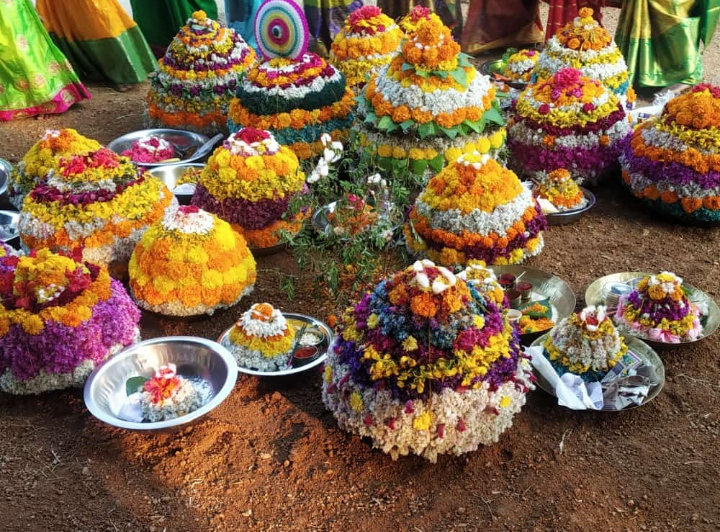
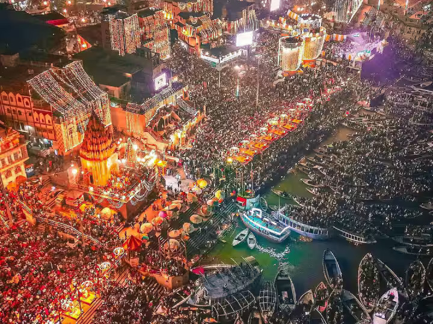
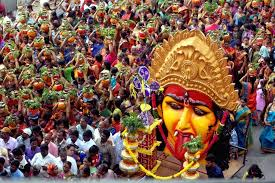

Ganesh Chaturthi
People celebrate Ganesh Chaturthi by bringing Lord Ganesha idols home, offering prayers, and later immersing them in water. The streets of Hyderabad are full of energy and devotion.

|  |
BathukammaBathukamma is a floral festival where women create flower stacks and dance around them while singing songs. It’s a colorful and joyful celebration of Telangana's culture. |
|  |
DiwaliDiwali is the festival of lights. Homes are decorated with oil lamps (diyas), rangoli, and lights. People burst crackers and share sweets to celebrate good over evil. |
|  |
BonaluBonalu is a Telangana festival where women offer rice in colorful pots to Goddess Mahakali. The celebrations include music, dancing, and vibrant street processions. |
Ganesh ChaturthiPeople celebrate Ganesh Chaturthi by bringing Lord Ganesha idols home, offering prayers, and later immersing them in water. The streets of Hyderabad are full of energy and devotion. |
|